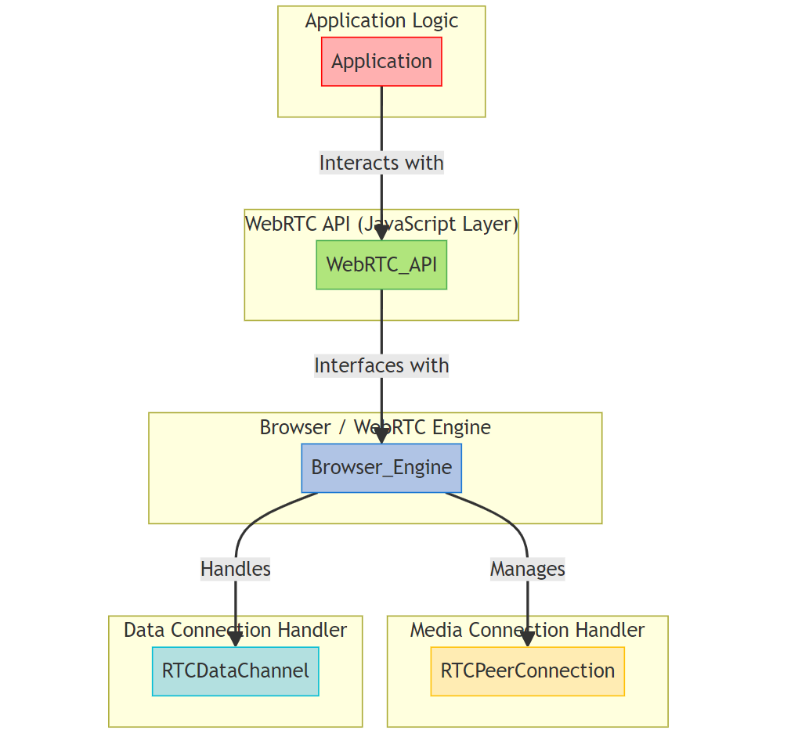

Building a Video Chat App with Node.js, Socket.io, and WebRTC
In this tutorial, we'll guide you through creating a real-time video chat application using Node.js for the server, Socket.io for WebSocket communication, and WebRTC for peer-to-peer video streaming.

Prerequisites
Node.js and npm installed on your machine.
Basic understanding of JavaScript and web development.
Step 1: Setup Your Project
Create a new project directory and initialize a Node.js project
mkdir video-chat-app
cd video-chat-app
Step 2: Install Dependencies
Install the required Node.js packages: Express, Socket.io, and Peer.js.
npm install express socket.io peer
Step 3: Create Server-Side Code
serverside code
Step 4: Create Client-Side Code
client side code
Step 5: Implement Client-Side JavaScript
client side code
Key Components:
Express: A web application framework for Node.js, simplifying route setup and HTTP request handling.
Socket.io: Manage WebSocket connections for real-time communication.
Peer.js (ExpressPeerServer): Integrate Peer.js with Express for WebRTC signaling.
Functionalities:
Routing: Manage routes to serve HTML templates and static assets.
WebSocket Communication: Handle WebSocket events for user connections, chat messages, etc.
Peer.js Integration: Set up Peer.js to handle WebRTC signaling.
Why this Tech Stack:
Node.js: Allow server-side JavaScript execution with a non-blocking, event-driven architecture.
Express: Simplify web server setup and routing.
Socket.io: Facilitate real-time communication between clients and the server.
Peer.js (ExpressPeerServer): Simplify WebRTC signaling and connection management.
Overall Purpose:
Real-Time Communication: Combine WebRTC and Socket.io for real-time, bidirectional communication.
Peer-to-Peer Video Streaming: Utilize WebRTC for direct peer-to-peer video streaming, reducing latency.
Scalability: Leverage Node.js for handling large numbers of concurrent connections, ensuring scalability.
Ease of Development: Utilize libraries like Socket.io and Peer.js to abstract away complexities, making it accessible for developers to build real-time applications.